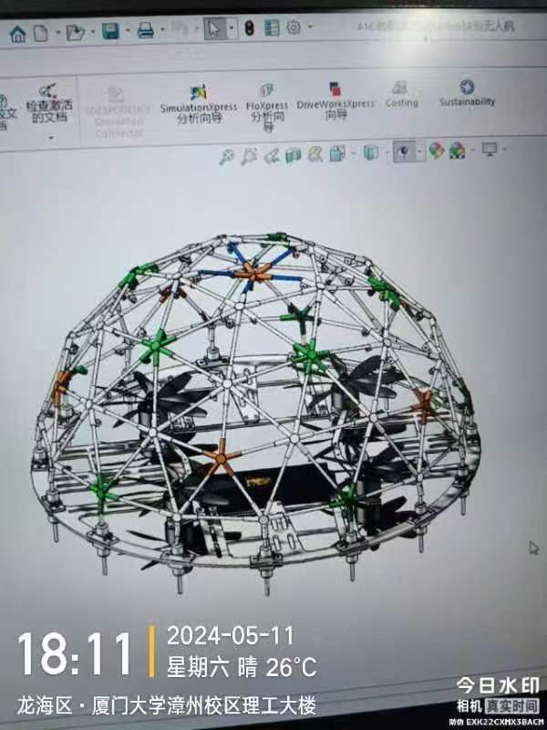
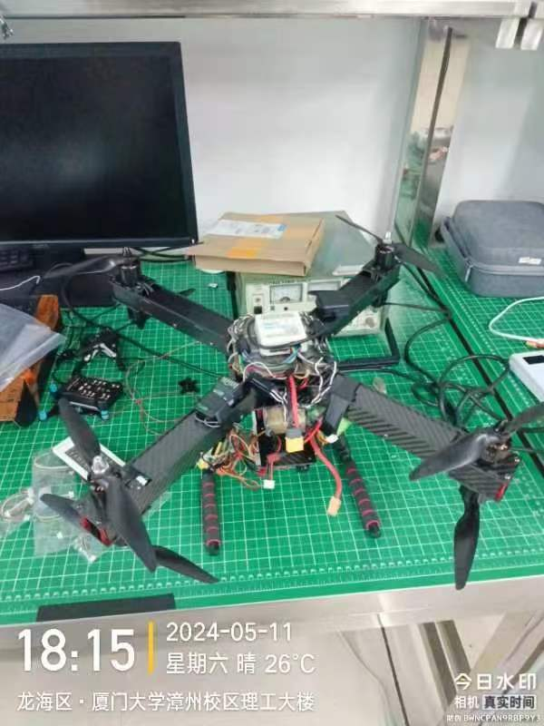

Publications
Design of a Fuzzy CPSO-BP Neural Network PID Control Algorithm for a Dual Quadcopter UAV System
2025 5th International Conference on Artificial Intelligence, Robotics, and Communication (ICAIRC) · Xiamen, China · pp. 544–547
This work develops a fuzzy CPSO-BP neural network PID algorithm for dual-quadrotor UAV flight control. In simulation, it reduced overshoot from 18.5% to 3.1%, settling time from 1.41 s to 0.45 s, and steady-state error from 0.85° to 0.09° compared with conventional PID.
Research Project
Intelligent Control & UAV Research
Research Assistant · Sep. 2022 – Present
Key Laboratory of Intelligent Control and Unmanned Systems
Developed a fuzzy CPSO-BP neural network PID flight-control algorithm; built a visualization platform for the bachelor's thesis; and collaborated with the hardware team on system testing and validation.
UAV Ground Station & Simulation Software
University-level Innovation & Entrepreneurship Program · Oct. 2025 – Sep. 2026
Contributed to the dual-quadrotor intelligent-control system and ground-station software, including simulation, implementation, testing, system integration, and documentation.
UAV Work in the Lab
Photos and recordings from the dual-quadrotor control project.

